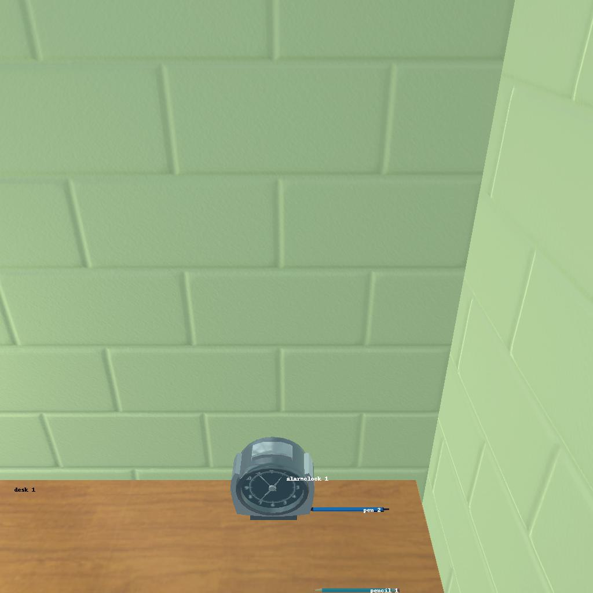
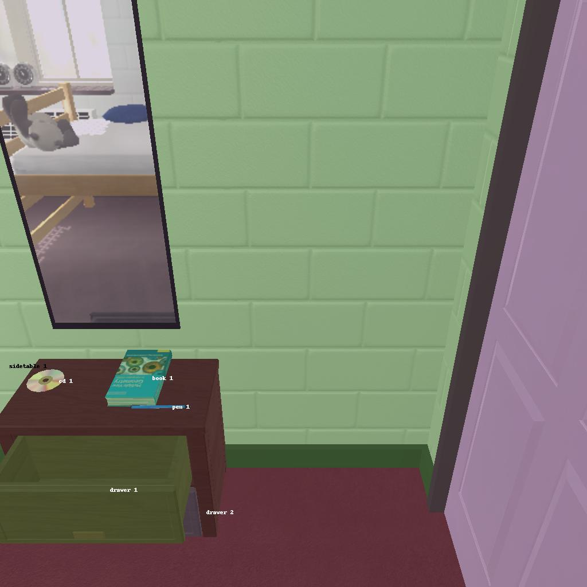

---------------------------------------------------------task: 8---------------------------------------------------------
--------------------------------------------------------------------------------------------------------------------------------------------------------------------
--------------------------------------------------------------------------------------------------------------------------------------------------------------------
Step:--------------------------------------------------------------------------17-------------------------------------------------------------------------------
----------------------------------------
VLM Prompt:
Image1:
Image2:
Image3:
**Instruction**
1. Analyze the provided image to identify all visible household objects, focusing on those relevant to the task description "put some laptop on desk."
2. Use the analysis of the image and the task hint "The agent must find an object of the desired type, pick it up, find the correct location to place it, and put it down there." to answer the question: what is the most reasonable action in the choices for the task description "put some laptop on desk"?
4. Decide and write the answer using the template: The answer is: (i): , where i is the real number. If there is no desired object in the image, search every place based on **Initial Observation** to find the object. And if no one is exactly correct, choose a similar answer.
**Initial Observation**
You are in the middle of a room. Looking quickly around you, you can see bed (1), garbagecan (1), desk (1), sidetable (1), drawer (1-5), laundryhamper (1)
**Answer Choices**
(1): go to bed 1
(2): go to garbagecan 1
(3): go to sidetable 1
(4): go to drawer 2
(5): go to laundryhamper 1
(6): go to drawer 3
(7): go to drawer 4
(8): go to drawer 5
(9): open drawer 1
(10): close drawer 1
(11): take book 1 from drawer 1
(12): take cd 1 from drawer 1
(13): take pen 1 from drawer 1
(14): examine drawer 1
**Answer**
Let's think step by step by following the instructions.
----------------------------------------
----------------------------------------
Original Response:
Firstly, we need to identify all visible household objects relevant to the task description "put some laptop on desk." In the provided images, there is no laptop visible. However, we do see a desk labeled "desk 1" in Image1 and Image2.
According to the task hint, the agent must find an object of the desired type, which in this case is a laptop. Since there is no laptop in sight, the agent will have to search for it. The initial observation indicates that there are several drawers (drawer 1-5) that the agent has not yet checked.
Based on this information, the most reasonable action for the task description "put some laptop on desk" would be to search the drawers for a laptop. Since we cannot see inside the drawers from the provided images, the agent should start by examining or opening the drawers one by one. The answer choice that corresponds to this action is (9): open drawer 1, as it is the first step in searching the drawers.
The answer is: (9): open drawer 1.
----------------------------------------
----------------------------------------
>>> Refine Original VLM Response and Get Pure Action: open drawer 1
----------------------------------------
-----------------------------------------------------------------
Running time: 12.598273277282715 seconds
Total Money: 4.88337
-----------------------------------------------------------------
-----------------------------------------------------------------
Text Observation:Nothing happens.
-----------------------------------------------------------------
UNSUCCEED